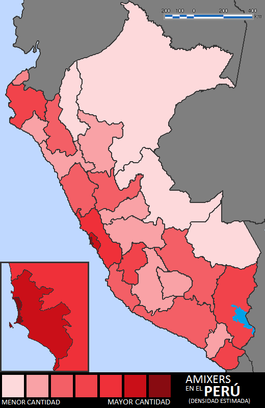

De: La Frikipedia, la enciclopedia extremadamente seria.
De: La Frikipedia, la enciclopedia extremadamente seria. De: La Frikipedia, la enciclopedia extremadamente seria.
| De la serie tribus urbanas del mundo: | |||
| Amixer | |||
| |||
| Hábitat | El riko San Martín, el riko Comas, el riko Lurigancho, el riko Barrios altos, Chorrillos, La rica Vicky, el "Llauca" Callao | ||
|---|---|---|---|
| Inteligencia | Igual a todas las criaturas que escuchan raagaeton | ||
| Frase favorita | No soy amixer pe' amía. | ||
| ¿Peligroso? | siempre que estés en su territorio. | ||
| Obsesión | Ser padres a los 16. | ||
| Notas | Ere' mi shica poshitiiiiiva (8) | ||
NOTAS A LA SALUD MENTAL Y/O FÍSICA DEL LECTOR: Este artículo está hecho con fines de joder informativos. La Frikipedia no se hace responsable por los ataques de negación o ira que pueda llegar a sentir después de leer este artículo. Antes de vandalizar (editar ésto poniendo insultos al autor o a su mamá) por favor tenga en cuenta que se puede revertir con tres clics. Disfrute su estadía.
«poOta ke nOzotrz zOmozz laz mejOrezz tlv n4diieh nOz iwalah!»
~ Amixers con alta autoestima.
«Thu enbidiiah ez mii fOrt4lez4h!»
~ Amixer que cree que los demás lo envidian.
«kOmenten miiz fOtx pz amix»
~ Amixer pidiendo desesperadamente que comenten sus fotos.
«¡Para'o sin polo pe coshatumae!»
~ Un amixer te ha retado a un duelo.
Los Amixers (canis peruvianis non sapiens) son una tribu urbana del Perú, conocidos también como lacras y el lado opuesto de los Pitucos. Los amixers visten hasta las webas usando ropa bamba de Gamarra o buzo de escuela estatal, gorros de cinco lucas y lentes oscuros de noche. En las fotos se distinguen por no saber posar o tener una forma muy perra de posar. Se dice que su idioma era usado para intercambiar cheats del GTA, contraseñas bancarias y para pasarse respuestas en los exámenes.
La palabra amixer /ámixer/ viene de "amix" que en Xat significa "amigo", amixer entonces significaría amiguero.
También se usa la palabra "ixer" para describir a los posers y de mal gusto de distintas tribus urbanas:
Segun viejos libros de historia, los amixers nacieron en el Perú en el 2000 (aún sin nombre específico) y fueron la evolución del clásico "ese chibolo huevón que me quiere robar" de los 90's. Los faites crecieron escuchando chicha, tecnocumbia y salsa en mototaxis con el 110% del volumen. A partir del 2007 con los emos se mezclaron y crearon los "emoámixers" y finalmente en 2008 se establecieron como tribu urbana con el raggaeton (o como se escriba). Su expansión se debe a las cuevas nocturnas donde eran obligados a manosearse, mal llamados "kinos", al contagio intraescolar y sobre todo al Hi5, ahora conocida como Hi5 Amixer, los amixers nacieron acá junto a sus imágenes coloridas de frases típicas y repetitivas. Puaj.
Los amixers suelen habitar todo Lima lugares a los que ellos llaman su "barrio fino" y sus vecinos amixers suelen llamarles "elegantes" o "la batería seria". Entre sus gustos musicales destacan: el reggaeton, la salsa, la chicha y la cumbia villera, entre otros géneros que ni siquiera son dignos de tener artículo.
Estudios recientes confirman que los amixers tienen inclinación a practicar parkour, en todos los casos con fines nada buenos.
Todo buen amixer debe saber distinguirse y hacerse notar vistiendo como vagabundo para hacerse respetar ante los vecinos y vecinas
Volverte un amixer es extremadamente fácil, aunque la moda ahora sea hacerse skater.
Esta lacra está empezando a descender en número, pero no hay que bajar la guardia: están evolucionando a skaters, hipsters skaters, lectores, skaters, rockeros, skaters, raperos, skaters y sobre todo skaters. En su tiempo se multiplicaron tan rápido que ya se habían encontrado un par de ejemplares jebis y góticos en ambos casos mujeres (o eso parecen). La misión amixer es Dominar el mundo con las redes sociales (Facebook, Sónico, esas huevadas) como ya lo hicieron con el Hi5, el Mesenger y el Fotolog; para eso, su arma más poderosa es escribir con etiquetas, que ya contagió a miles de imbéciles usuarios en diferentes páginas
El gobierno peruano planea enviar a todos los amixers a Shile como muestra de amistad y afecto entre ambos países.

Sin picarse.
| Tribus Urbanas | ||||
|---|---|---|---|---|
|

| |||
|
Fúlbol
Tribus urbanas
Personajes, celebridades y demás figuretis
Internet, música y televisión
Políticos
|
Autor(es):